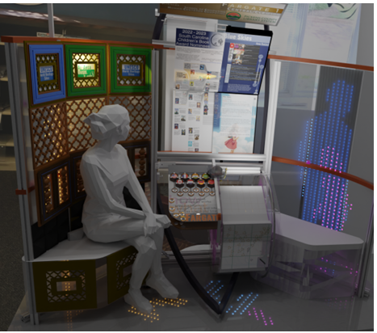

Facebook offers dozens of privacy settings, yet users are expected to locate, understand, and manage the ones that matter to them, and many struggle to do so. Existing approaches typically rely on generic help pages and one-size-fits-all nudges, but users differ in their privacy knowledge, concerns, and areas of difficulty.
User-Tailored Privacy (UTP) addresses this by measuring each user's privacy preferences, modeling them, and adapting support to the individual. My dissertation applies UTP to privacy education to answer one question: which settings does this particular user need to know about? Unlike nudging, which steers behavior, education builds users' own knowledge and skills and empowers them to make informed privacy decisions.
My role: I lead this project, from study design and data collection to analysis and writing.
We choose movies for how they make us feel: the joy of a comedy, the suspense of a thriller, the quiet sadness of a drama. Yet recommender systems rarely show us that emotional side. This study gives people a window into each film's emotional signature, its blend of Plutchik's eight core emotions, and lets them tune their emotional preferences in real time.
I compare two visualizations: a flower chart inspired by Plutchik's wheel of emotions, and a lollipop chart, a simple format most people already know how to read. Each comes in two views. The individual view shows one movie's signature at a time. The combined view shows all recommendations together: the movie a user hovers over appears in color, and the rest fade to gray, so users can compare one film against the whole set. Together, these designs help us understand how seeing emotions helps people explore and choose what to watch.
My role: I lead this study. I designed and developed both visualizations and designed the experiment, working with fellow HATLab students on the RSSA platform.
Many HCI user studies now send participants' input to commercial large language models hosted on third-party servers. This project examines how researchers protect participants' privacy and welfare in these studies, combining a review of recent CHI and IUI papers with interviews with the researchers who wrote them.
My role: As part of the research team, I contributed to the qualitative data analysis and wrote the first draft of the findings.
Usable, Secure Data Workflows for Human-Centered AI Research
This NSF-funded collaboration develops usable, secure data workflows that help human-centered AI researchers protect participant privacy while keeping their data useful. One line of the work focuses on study planning, including a usable tool that helps researchers choose sample sizes for their studies.
My role: As part of the team, I contribute citations and related-work summaries, and I collected and organized data for a survey and heuristic evaluation of existing power analysis tools.
The Tangible Visualization Group builds on a vision of tangible interaction, in which digital information takes physical form: objects people can hold, turn, and arrange, with computing woven into them. Using low-cost and upcycled materials with embedded technologies such as NFC tags, the group designs interactive tokens, tiles, and the structures that hold them. Each of my prototypes explores a different purpose, from heritage-inspired design to hands-on learning about culture and language, and many draw on Arabic and Saudi heritage.

Roshn latticework in the installation's background panels
Roshn Token
Inspired by the rawshan, the ornate wooden latticework windows of historic Jeddah, my home city in Saudi Arabia. My design appears as the latticework panels in the group's Hexplinth tablet and hex drum installation (TEI 2024).
A heritage education concept: bilingual Arabic–English tokens pairing two UNESCO World Heritage Sites, Hegra in Saudi Arabia and Mesa Verde in the United States. Turning both to the same concept (stone, marks, or dwelling) invites learners to discover how each culture shaped sandstone differently.
Developed for our research on paper-based tangibles, these tiles teach Arabic through touch: each carries a word in Kufic, Naskh, or Ruqʿa calligraphy, with an NFC tag linking to its pronunciation. Arranging them right to left on a rack, learners compose Arabic proverbs.